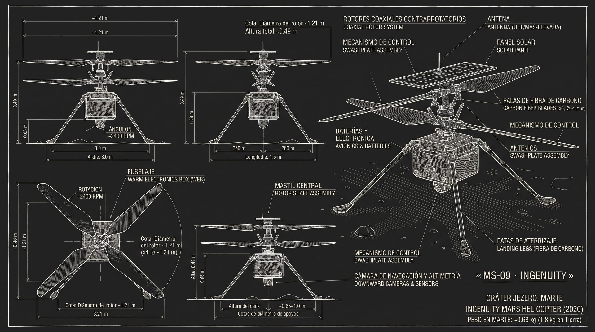

Helicóptero Ingenuity

El primer aparato que voló con motor en otro planeta: 72 vuelos y 17 km sobre Marte antes de romper las palas.
Posado en el cráter Jezero desde el 18 de enero de 2024, con las palas dañadas; ya no puede volar. Personas: Teddy Tzanetos, Dave Lavery, Bill Nelson
Lo que hizo
- Mi encargo — Me llevaron a Marte como prueba: cinco vuelos en treinta días para ver si se podía volar donde el aire es menos de una centésima parte del terrestre.
- Los vuelos — Acabé haciendo 72 vuelos, estuve 128,8 minutos en el aire y recorrí 17 kilómetros, yendo por delante del rover para mirarle el terreno.
- El final — En mi último vuelo, el 18 de enero de 2024, se me rompieron las palas al tomar tierra. Sigo de pie en el cráter Jezero, todavía en contacto, pero ya no puedo volar.
Modelo 3D, chat y cómic, en tres idiomas
Fuentes
- science.nasa.gov/mission/mars-2020-perseverance/ingenuity-mars-helicopter/
- www.nasa.gov/news-release/after-three-years-on-mars-nasas-ingenuity-helicopter-mission-ends/
Ver el índice completo · Proyecto del NASA Space Apps Challenge 2026. Contenido con fuentes citadas.